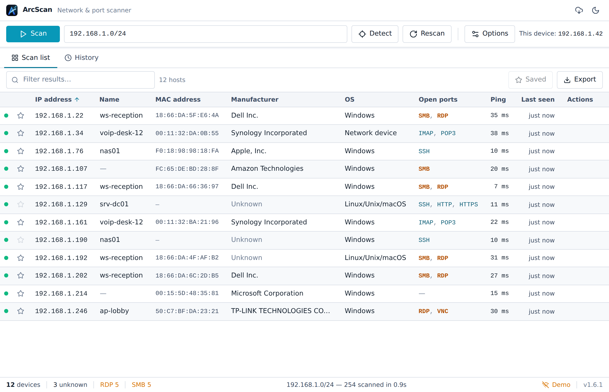

Auto-detects your subnet
Opens ready to scan your local network — or enter any IP, dashed range, or CIDR.
ArcScan is a fast, lightweight network & port scanner. Discover live hosts with their IP, hostname, MAC, manufacturer, open ports and more — in seconds. A modern, native desktop app in the spirit of Advanced IP Scanner and Angry IP.

Read-only discovery — ArcScan inspects what's reachable. It never attacks, brute-forces, or uploads anything.
Opens ready to scan your local network — or enter any IP, dashed range, or CIDR.
ICMP + TCP probing with an ARP-verified LAN sweep, so results stay consistent run to run.
IP, hostname, MAC, manufacturer, OS guess, open ports and ping — sortable and filterable.
Open a device's web UI, RDP, SSH or SMB shares, send Wake-on-LAN, or copy its address.
Every scan is stored locally. Star known devices, label them, and spot new arrivals.
Export to CSV, JSON or XML. The app keeps itself up to date with signed releases.
A native desktop interface built for scanning — not a repurposed web page.
Grab the installer for your OS above. Windows x64 & ARM64 and macOS are all supported.
ArcScan isn't code-signed yet, so on first launch Windows SmartScreen may say "Windows protected your PC" — click More info → Run anyway. On macOS, right-click the app and choose Open the first time. Prefer certainty? Match the SHA-256 checksum from the release.
Press Scan. ArcScan finds your devices in seconds — and updates itself when new versions ship.
Yes — free and open source. The full source lives on GitHub.
Windows 10/11 on x64 and ARM64, and macOS (a universal build for Apple Silicon and Intel).
No. Scans run entirely on your machine and results are stored locally — nothing is uploaded. The only network call this website makes is a read-only check to GitHub for the latest version.
No admin is needed to scan — ArcScan uses ordinary OS networking. The installer may prompt for elevation to install for all users, like any app.
The installers aren't code-signed with a paid certificate yet, so SmartScreen/Gatekeeper flag a new publisher. Proceed as described in the install steps, and verify the SHA-256 checksum for peace of mind.
ArcScan checks for signed updates and can download and install them from within the app, so you stay current without revisiting this page.